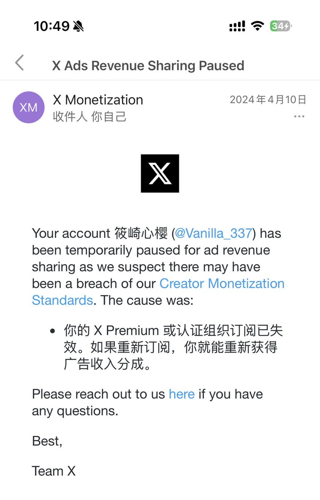
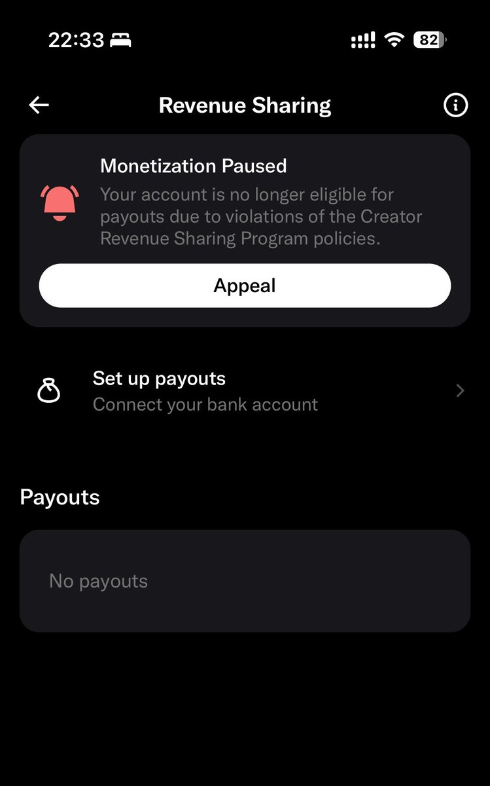

铨Quan🏳️⚧️🍥｜雪秋重度依赖
@YongQuan
@SnozakiSakura 怎么现在需要人工审核了🤔24年25年的确是续上就活了


草莓泡芙🍀
@SnozakiSakura
奉劝大家一句，如果你的号之前曾经开过蓝，后面断掉了，那就不要想着再用这个号加入revenue sharing了，因为需要人工审核，但是垃圾团队经常很久都不处理，直接去运营一个没开过蓝标的号比较好。 https://t.co/IEGvmVGwyn